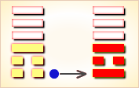
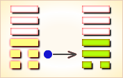
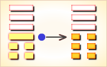
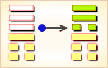
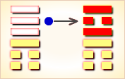
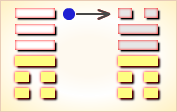

周易第33卦_遁卦(天山遁)_乾上艮下
如有疑问互相交流，微信：470283584
周易第33卦详解
遁卦原文
遁。亨。小利贞。
象曰：天下有山，遁。君子以远小人，不恶而严。
白话文解释
遁卦：通达。小有利之占问。
《象辞》说：本卦上卦为乾，乾为天，下卦为艮，艮为山，天下有山，天高山远，是遁卦的卦象。君子观此卦象，从而不用以恶报恶的方法对付小人，而是采取严厉的态度，挂冠悬笏，自甘退隐，远离小人。
《断易天机》解
遁卦乾上艮下，为乾宫二世卦。卦下阴爻逐渐生长，是阳道将衰，恶事将起之兆，说明小人欲制君子，此时君子处于退避的状态。
北宋易学家邵雍解
逃避退隐，盛极必衰；言行严禁，待机再举。
得此卦者，宜退不宜进。退守可以保身，若轻举妄动则会招灾。宜谨言慎行，待机行事。
台湾国学大儒傅佩荣解
时运：最好退隐，君子有吉。
财运：物价涨跌，相去甚远。
家宅：须防作祟；婚姻不宜。
身体：避居吉地。
传统解卦
这个卦是异卦（下艮上乾）相叠。乾为天，艮为山。天下有山，山高天退。阴长阳消，小人得势，君子退隐，明哲保身，伺机救天下。
大象：山在天之下，阴渐长，而阳渐消，宜退避三舍。
运势：小人道长，君子道消，凡事宜退不宜进，穷则独善其身，修身养性。
事业：时运不佳，应考虑退隐，勿与不正派的人同流合污。但不是消极逃避，而是为保存实力，总结经验，把握时机，待机而出。切忌贸然行事，造成不必要的损失。同时勿为眼前小利禄所诱惑。
经商：市场进入衰落的状况，行情不佳。决不可执意追求，盲目投入，而应沉着冷静，坚持商业道德，远离小人、奸商，保存自己的实力，等待市场行情好转，再图发展。
求名：明哲保身，甘居退隐。全力总结提高，为复出做准备。
婚恋：勿急于解决，更不可妄动强求。时机成熟时，须以纯正的态度去正确对待。
决策：处于衰败时期，小人得志。盲目行动必遭不利。虽不必以恶报恶，但更不可同流合污，因小失大，因权宜轻重，韬光养晦，保存实力，断然离去，不可犹豫不决。潜心发展个人实力，隐忍待机。只要能坚定正道，坚持中正，必可在时机成熟时复出，成就大业。
台湾张铭仁解卦
遁：表示退守、退步之意，主凶象。一切事项均需停止下来，因其中可能有小人或障碍、阴谋在破坏中。退另有表示退步之意，功课、事业，均不再如同往常般的成绩了！
解释：隐居退守。
特性：外华内虚，内心不易满足空虚，自我要求高，不善人际关系，但有贵人运。宜追求心灵宗教寄托。
运势：小人道长，君子须远离小人，诸事宜守。艮者，止也，言行物事要谨慎，才能得安而运泰。若遇小人之害，见陷于是非之地，勿管闲事，识时务为俊杰。
家运：须多积德行善，可得安祥。若常争端则衰运，且有别离之象、离婚之象。若曾数经波折之君子，历尽沧桑，则有先恶后吉之运。
疾病：病重，注意血气不调、头、背、筋骨不良之疾。
胎孕：母子不安，慎之。
子女：儿女体质虚弱，有亲子不和之象。
周转：不成，有碍。
买卖：宜守，不能进取大事，否则失败。
等人：遁，藏也。不能来。
寻人：下落不明，为家庭之事而离乡背井，寻亦难觅。
失物：失落远处，不能寻回。
外出：不宜积极行动，而应等待时机，创造条件，争取早日而行。
考试：不理想。
诉讼：强行争取亦不利，宜罢手逃避反吉。
求事：须待时机。
改行：不得时。
开业：开业不利。
周易第33卦初六爻详解
初六爻辞
初六。遁尾，厉。勿用有攸往。
象曰：遁尾之厉，不往何灾也。
白话文解释
初六：君子全部隐退，国家就危险了。不能有所作为了。
《象辞》说：逃遁隐藏仍未脱离危险，若能坚持苦斗，设法取胜，有什么灾难？
北宋易学家邵雍解
凶：得此爻者，宜安分守己，可无忧。做官的宜择机而退。
台湾国学大儒傅佩荣解
时运：深藏不露，不会有难。
财运：全部出手，可以免灾。
家宅：早迁为宜；婚姻不合。
身体：走路小心。
初六变卦

初六爻动变得周易第13卦：天火同。这个卦是异卦（下离上乾）相叠，乾为天，为君；离为火，为臣民百姓，上天下火，火性上升，同于天，上下和同，同舟共济，人际关系和谐，天下大同。
周易第33卦六二爻详解
六二爻辞
六二。执之用黄牛之革，莫之胜说。
象曰：执用黄牛，固志也。
白话文解释
六二：抓来用黄牛革绳紧紧捆绑，这样就不能解脱了。
《象辞》说：用黄牛革绳捆绑，表示意志坚固。
北宋易学家邵雍解
平：得此爻者，家中有争执，安常守分无忧，农人有进牛畜之喜 。
台湾国学大儒傅佩荣解
时运：虽有才华，功名难望。
财运：守住本金，脱售不及。
家宅：迁移有利；退婚不易。
身体：运动有恒。
六二变卦

六二爻动变得周易第44卦：天风姤。这个卦是异卦（下巽上乾）相叠。乾为天，巽为风。天下有风，吹遍大地，阴阳交合，万物茂盛。姤（gǒu）卦与夬卦相反，互为“综卦”。姤即媾，阴阳相遇。但五阳一阴，不能长久相处。
周易第33卦九三爻详解
九三爻辞
九三。系遁，有疾厉。畜臣妾，吉。
象曰：系遁之厉，有疾惫也。畜臣妾吉，不可大事也。
白话文解释
九三：被拖累而不能决然隐退，就像身染重病，情形危险。在这种情况下，蓄养奴婢或可有利。
《象辞》说：被拖累以至不能决然隐退所造成的危险，有如被疾病折腾得疲惫不堪，所以说蓄养奴婢则吉，意思是暂且养疾疗伤，不可贸然行动。
北宋易学家邵雍解
平：得此爻者，多灾多难，良善者，得妻之力，或进人口。做官的宜急流勇退。
台湾国学大儒傅佩荣解
时运：急流勇退，可保无害。
财运：当售即售，久留必损。
家宅：急速迁移；娶妻不利。
身体：纵欲伤身。
九三变卦

九三爻动变得周易第12卦：天地否。这个卦是异卦（下坤上乾）相叠，其结构同泰卦相反，系阳气上升，阴气下降，天地不交，万物不通。它们彼此为“综卦”，表明泰极而否，否极泰来，互为因果。
周易第33卦九四爻详解
九四爻辞
九四。好遁，君子吉，小人否。
象曰：君子好遁，小人否也。
白话文解释
九四：喜爱隐居，这对君子是吉利的，对小人则未必。
《象辞》说：君子不以利禄为心，喜爱隐居；小人以利禄为心，不甘退隐。
北宋易学家邵雍解
平：得此爻者，虽有收获，但谨防因小人而受祸。做官的宜告休避难。
台湾国学大儒傅佩荣解
时运：君子正名，小人盗名。
财运：出货得利，不必迟疑。
家宅：隐居为宜；离婚之忧。
身体：大人可治，小孩危险。
九四变卦

九四爻动变得周易第53卦：风山渐。这个卦是异卦（下艮上巽）相叠。艮为山，巽为木。山上有木，逐渐成长，山也随着增高。这是逐渐进步的过程，所以称渐，渐即进，渐渐前进而不急速。
周易第33卦九五爻详解
九五爻辞
九五。嘉遁，贞吉。
象曰：嘉遁贞吉，以正志也。
白话文解释
九五：退隐以时，值得赞美，卜问前程，通泰吉利。
《象辞》说：退隐以时，值得赞美；遵循正道，所以吉利，因为他存心正直，品德崇高。
北宋易学家邵雍解
吉：得此爻者，近贵多利。做官的或升迁，或功成身退。
台湾国学大儒傅佩荣解
时运：功成身退，值得嘉许。
财运：应变得宜，仍可获利。
家宅：高风可尚；志同为婚。
身体：避开阴邪。
九五变卦

九五爻动变得周易第56卦：火山旅。这个卦是异卦（下艮上离）相叠。此卦与丰卦相反，互为“综卦”。山中燃火，烧而不止，火势不停地向前蔓延，如同途中行人，急于赶路。因而称旅卦。
周易第33卦上九爻详解
上九爻辞
上九。肥遁，无不利。
象曰：肥遁无不利，无所疑也。
白话文解释
上九：远走高飞，退隐山林，无不利。
《象辞》说：上九爻辞讲远走高飞，退隐山林，无不利，说明其人善观形势，急流勇退。
北宋易学家邵雍解
吉：得此爻者，营谋获利，家肥业厚。做官的乐天知命，退居闲职。
台湾国学大儒傅佩荣解
时运：乐天知命，安享天年。
财运：人弃我取，退可得利。
家宅：利于求财；私奔之虞。
身体：过胖虚脱。
上九变卦

上九爻动变得周易第31卦：泽山咸。这个卦是异卦（下艮上兑）相叠。艮为山；泽为水。兑柔在上，艮刚在下，水向下渗，柔上而刚下，交相感应。感则成。